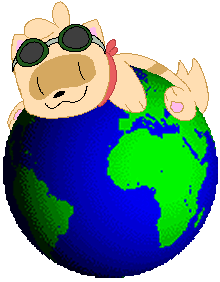

Hello from Cyberspace, Welcome to the
Nippoverse
Come on in!
Designed for desktop computers at 720p
For 1080p, 133% zoom recommended

For the sake of archival, this website will remain on the internet, but it will no longer be updated.
I have moved to a new site. Click the link/buttons above to go there.
I hope that you have enjoyed this site for what it was, and that my new site continues its legacy.